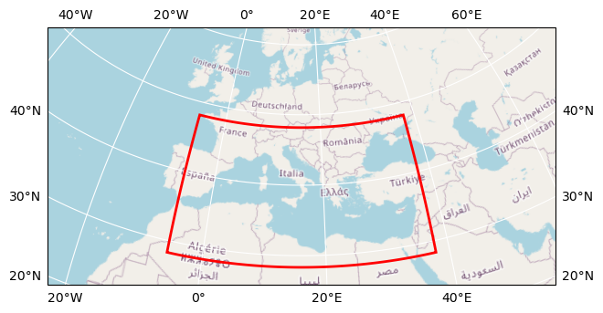

Hydrology Cube
How to open this dataset in DeepESDL JupyterLab
from xcube.core.store import new_data_store
store = new_data_store("s3", root="deep-esdl-public", storage_options=dict(anon=True))
ds = store.open_data('hydrology-1D-0.009deg-100x60x60-3.0.2.zarr')
Bounding box map

Map tiles and data from OpenStreetMap, under the ODbL.
| Parameter |
Value |
| Bounding box longitude (°) |
-5.70080002975464 to 37.76919997024536 |
| Bounding box latitude (°) |
28.339799316406264 to 48.17579931640626 |
| Time range |
2014-12-31 to 2022-10-06 |
| Time period |
1D |
| Publisher |
DeepESDL Team |
Click here for full dataset metadata.
Variable list
Click on a variable name to jump to the variable’s full metadata.
| Variable |
Long name |
Units |
| E |
Evaporation |
mm d^-1 |
| SM |
Soil Moisture |
% Relative Saturation |
| SWE |
Snow Water Equivalent |
1 |
| precip |
Precipitation |
mm d^-1 |
E
| Field |
Value |
| acknowledgement |
Hydrology 4D |
| color_bar_name |
plasma |
| color_value_max |
10 |
| color_value_min |
0 |
| description |
Evaporation |
| long_name |
Evaporation |
| original_add_offset |
0.0 |
| original_name |
E |
| original_scale_factor |
1.0 |
| processing_steps |
Gridding nc datasets |
| source |
4dmed_data.eodchosting.eu/4dmed_data/GLEAM_openloop_V1.1 |
| standard_name |
evaporation |
| units |
mm d^-1 |
SM
| Field |
Value |
| acknowledgement |
Hydrology 4D |
| color_bar_name |
plasma_r |
| color_value_max |
1 |
| color_value_min |
0 |
| description |
TU Wien RT1-Sentinel-1 soil moisutre retrievals |
| long_name |
Soil Moisture |
| original_add_offset |
0.0 |
| original_name |
SM |
| original_scale_factor |
1.0 |
| processing_steps |
Gridding nc datasets, daily aggregates |
| source |
4dmed_data.eodchosting.eu/4dmed_data/TUWien_RT1_SM |
| standard_name |
soil_moisture |
| units |
% Relative Saturation |
| untis |
% relative saturation |
SWE
| Field |
Value |
| acknowledgement |
Hydrology 4D |
| color_bar_name |
Blues_alpha |
| color_value_max |
2000 |
| color_value_min |
0 |
| description |
Snow Water Equivalent |
| long_name |
Snow Water Equivalent |
| original_add_offset |
0.0 |
| original_name |
SWE |
| original_scale_factor |
1.0 |
| processing_steps |
Gridding nc datasets |
| source |
4dmed_data.eodchosting.eu/4dmed_data/SWE/SWE_CPC_GPM_ERA5downT_RadGhent_filter5mm |
| standard_name |
snow_water_equivalent |
| units |
1 |
precip
| Field |
Value |
| acknowledgement |
Hydrology 4D |
| color_bar_name |
viridis_alpha |
| color_value_max |
100 |
| color_value_min |
0 |
| description |
Precipitation |
| long_name |
Precipitation |
| original_add_offset |
0.0 |
| original_name |
precip |
| original_scale_factor |
1.0 |
| processing_steps |
Gridding nc datasets |
| source |
4dmed_data.eodchosting.eu/4dmed_data/CNR_products/precipitation_GPM_CPC_SM2RAIN-ASCAT |
| standard_name |
precipitation |
| units |
mm d^-1 |
| Field |
Value |
| Conventions |
CF-1.10 |
| acknowledgment |
All data providers are acknowledged inside each variable |
| contributor_name |
University of Leipzig, Brockmann Consult GmbH |
| contributor_url |
https://www.uni-leipzig.de/, https://www.brockmann-consult.de/ |
| creator_name |
University of Leipzig, Brockmann Consult GmbH |
| creator_url |
https://www.uni-leipzig.de/, https://www.brockmann-consult.de/ |
| date_modified |
2023-12-21T11:50:17.830496 |
| geospatial_lat_max |
48.17579932 |
| geospatial_lat_min |
28.33979932 |
| geospatial_lat_resolution |
0.009 |
| geospatial_lat_units |
degrees_north |
| geospatial_lon_max |
37.76919997 |
| geospatial_lon_min |
-5.70080003 |
| geospatial_lon_resolution |
0.009 |
| geospatial_lon_units |
degrees_east |
| id |
hydrology-1D-0.009deg-100x60x60-3.0.2.zarr |
| license |
Terms and conditions of the DeepESDL data distribution |
| project |
DeepESDL |
| publisher_name |
DeepESDL Team |
| publisher_url |
https://www.earthsystemdatalab.net/ |
| time_coverage_end |
2022-10-06T12:00:00.000000000 |
| time_coverage_start |
2015-01-01T12:00:00.000000000 |
| title |
Hydrology Cube |